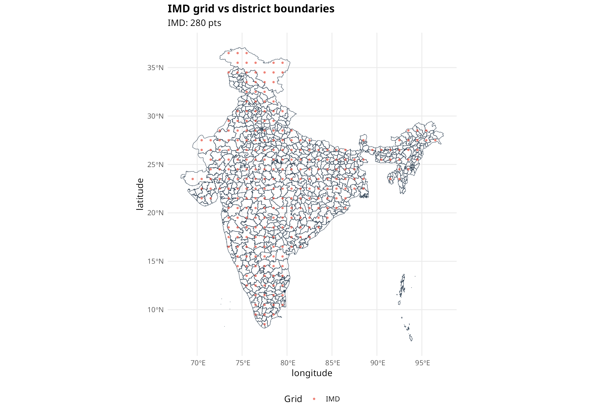
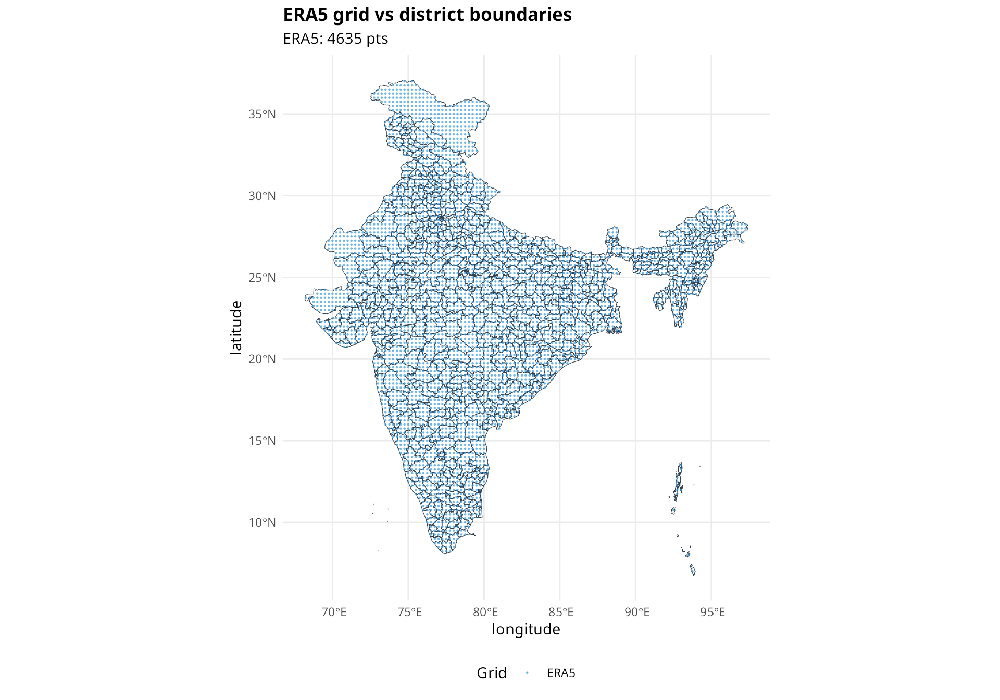
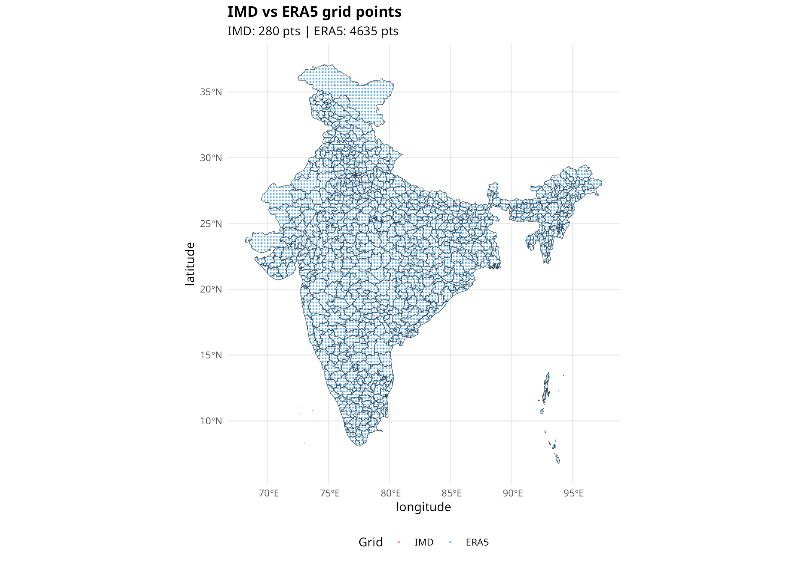
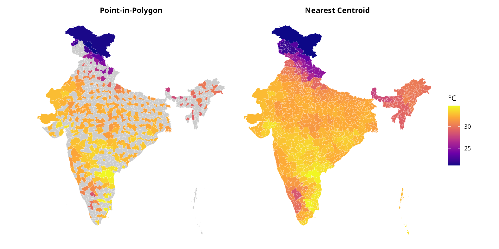
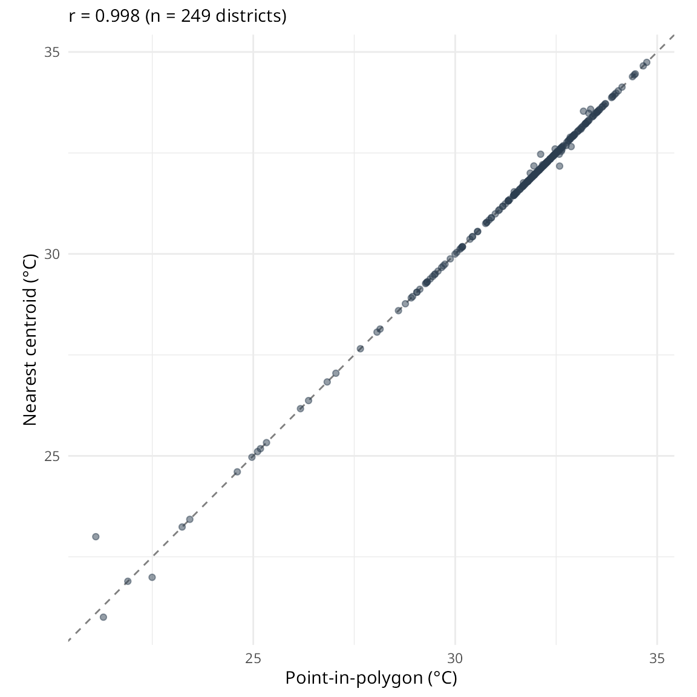

The Problem
Climate datasets like ERA5 and IMD provide data on regular grids (e.g., 0.25° × 0.25°). When aggregating to administrative boundaries like districts, smaller regions may not contain any grid points, resulting in missing data.
districts_url <- "https://bharatviz.saketlab.org/India_LGD_districts.geojson"
districts_file <- "indian_districts.geojson"
if (!file.exists(districts_file)) {
download.file(districts_url, districts_file, mode = "wb", timeout = 300)
}
districts_sf <- sf::st_read(districts_file, quiet = TRUE)
imd_tmax <- imd_temperature_geojson(
request_id = "spatial_demo",
start_year = 2023, end_year = 2023,
geojson_file = districts_file,
var_type = "tmax"
)
imd_spatial <- imd_tmax %>%
group_by(longitude, latitude) %>%
summarise(temp = mean(temperature, na.rm = TRUE), .groups = "drop")
era5_temp <- era5ify_geojson(
request_id = "spatial_era5",
variables = "2m_temperature",
start_date = "2023-01-01",
end_date = "2023-01-31",
json_file = districts_file,
frequency = "daily",
resolution = 0.25
)
era5_spatial <- era5_temp %>%
group_by(longitude, latitude) %>%
summarise(temp = mean(value, na.rm = TRUE), .groups = "drop")Visualizing grid coverage
The compare_grids() function shows how grid points align
with polygon boundaries.
compare_grids(
IMD = imd_spatial,
point_size = 1,
polygons = districts_sf,
title = "IMD grid vs district boundaries"
)
compare_grids(
ERA5 = era5_spatial,
colors = c(ERA5 = "#3498DB"),
point_size = 0.5,
polygons = districts_sf,
title = "ERA5 grid vs district boundaries"
)
compare_grids(
IMD = imd_spatial,
ERA5 = era5_spatial,
point_size = 0.5,
polygons = districts_sf,
title = "IMD vs ERA5 grid points"
)
Red circles are IMD grid points, blue circles are ERA5 grid points. Many small districts have no grid points within their boundaries.
Coverage statistics
IMD coverage
imd_coverage <- check_grid_coverage(imd_spatial, districts_sf, c("state_name", "district_name"))
cat("IMD Grid Coverage:\n")
#> IMD Grid Coverage:
cat(" Total districts:", imd_coverage$total_polygons, "\n")
#> Total districts: 785
cat(" Grid points:", imd_coverage$total_grid_points, "\n")
#> Grid points: 280
cat(" Districts with data:", imd_coverage$polygons_with_points, "\n")
#> Districts with data: 249
cat(" Coverage:", imd_coverage$coverage_percent, "%\n")
#> Coverage: 31.7 %ERA5 coverage
era5_coverage <- check_grid_coverage(era5_spatial, districts_sf, c("state_name", "district_name"))
cat("ERA5 Grid Coverage:\n")
#> ERA5 Grid Coverage:
cat(" Total districts:", era5_coverage$total_polygons, "\n")
#> Total districts: 785
cat(" Grid points:", era5_coverage$total_grid_points, "\n")
#> Grid points: 4635
cat(" Districts with data:", era5_coverage$polygons_with_points, "\n")
#> Districts with data: 752
cat(" Coverage:", era5_coverage$coverage_percent, "%\n")
#> Coverage: 95.8 %Aggregation methods
Point-in-Polygon
The traditional approach uses spatial joins to find grid points within each polygon:
Comparing results
make_map <- function(data, title) {
map_sf <- districts_sf %>%
left_join(data, by = c("state_name", "district_name"))
ggplot(map_sf) +
geom_sf(aes(fill = value), color = "white", linewidth = 0.05) +
scale_fill_viridis_c(option = "plasma", na.value = "grey80", name = "°C") +
labs(title = title) +
theme_void() +
theme(plot.title = element_text(hjust = 0.5, face = "bold", size = 11))
}
p1 <- make_map(result_pip, "Point-in-Polygon")
p2 <- make_map(result_nearest, "Nearest Centroid")
p1 + p2 + plot_layout(guides = "collect")
Value comparison
For districts that have data in both methods:
comparison <- result_pip %>%
rename(pip = value) %>%
inner_join(
result_nearest %>% rename(nearest = value),
by = c("state_name", "district_name")
) %>%
filter(!is.na(pip) & !is.na(nearest))
cor_val <- cor(comparison$pip, comparison$nearest, use = "complete.obs")
ggplot(comparison, aes(x = pip, y = nearest)) +
geom_abline(slope = 1, intercept = 0, linetype = "dashed", color = "grey50") +
geom_point(alpha = 0.5, color = "#2C3E50") +
coord_fixed() +
labs(
x = "Point-in-polygon (°C)",
y = "Nearest centroid (°C)",
subtitle = sprintf("r = %.3f (n = %d districts)", cor_val, nrow(comparison))
) +
theme_minimal()